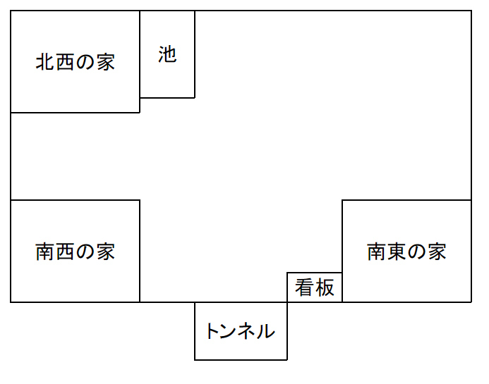

シナリオ
【背景】
ニャルラトホテプのお遊びで、とある村の住人が一人の少女を残して全員狂い死んでしまった。
おもちゃを失ってしまったニャルラトホテプは新たなおもちゃを求めた。
所謂「怪異」を真似たものを発生させ、人間達をその村に誘い込んだ。
また、その際「人間のクトゥグアへの敵対心が高まれば面白いな」と、クトゥグアを思い起こさせるような怪異(緋色の鳥)を発生させた。
姉も、家族すら失った一人の少女は、ノーデンスと出合った。
自分を襲った惨劇の元凶の正体を知るため、そしてその元凶に対抗しうる力を得るために、ノーデンスからその魔導書を受け取り、反撃の機会を伺う。
ノーデンスは、ニャルラトホテプに恥をかかせるため、ニャルラトホテプに敵対心を抱く少女に、ニャルラトホテプが人間に敵対させようとしていたクトゥグアの力を利用させて、襲わせようとした。
自らが利用しようとしていた力で、嫌がらせされる。その様が見たかったのだ。
そこに「人間の少女がニャルラトホテプに勝てるかどうか」は関係なかった。
【登場する怪異】
- 猿夢
- てけてけ
- 犬鳴村
- SCP-444-JP
- ひとりかくれんぼ
- 邪視
【シナリオ内容】
いつもと変わらない日常を過ごしていたあなたは、とある夢を見る。
あなたは有名な掲示板の話、「猿夢」と酷似していることに気付く。
放課後。あなたが部室へ行くと、三年生の「氷室 ラト（ひむろ らと）」という少女が席に座ってオカルト誌を開いていた。
そこには「猿夢」のこと、「SCP-444-JP」のことについて書かれている。
受け取った一通の手紙を開けると、「夜の山で『てけてけ』という、地面を這う人型の化け物を見た。場所は、三界山(さんかいさん)。真相を確かめてほしい」とでかでかと書かれた紙が一枚だけ入っていた。
てけてけとは、地面を這う下半身が切断されて上半身だけの姿の女子中学生や女性の亡霊である、ということがわかる。
【導入】
遊園地にあるような電車の、一番前に座っているという夢だ。
そこに、精気のない男の人の声でアナウンスが流れる。「次は～鳥の餌～鳥の餌です」という内容だ。
それを聞くとと同時に、意識が遠のいていく。
〈オカルト〉成功
掲示板では、もし処刑されれば「現実世界では心臓麻痺、夢の世界では挽肉」になるのではないか？ とスレ主が語っている。
しかし、いつもと少し違うのは、一枚の手紙だった。
オカ研パート
オカルト誌
見開きページの右半分には遊園地にあるような所謂「お猿さん電車」のような画像が、左半分には真っ赤な空に巨大な赤い鳥が飛んでいる画像が見える。
〈目星〉or〈オカルト〉成功
とある掲示板の話。
スレ主が夢の中で不思議な体験をする。
その夢は遊園地あるような電車に乗る、といった内容である。
「次は生けづくり～生けづくりです」というアナウンスが流れると、最後尾に座っていた男が叫び声を上げながら、刃物を持った小人に体を裂かれ、魚の「生けづくり」のような姿に変えられてしまう。
今度は「次は～えぐり出し～えぐり出しです」というアナウンスが流れると、後ろから二番目に座っていた女性は悲鳴を上げながら、二人の小人が、ギザギザのスプーンで彼女の眼球を「えぐり出す」。
そして「次は挽肉～挽肉です」というアナウンスが流れる。「次は自分」。そう思ったスレ主は、必死に目覚めろ、目覚めろと念ずる。
そうして意識が遠のいていく直前。「逃げるんですか～次に来たときは最後ですよ」というアナウンスが流れた。
「あかしけ やなげ 緋色の鳥よ くさはみ ねはみ けをのばせ」という言葉を読み上げてしまった者は赤い原野で赤い空を飛び、「緋色の鳥」に喰われる、という幻覚を見ることになる。
そしてその体験は喰われる度にループし、抜け出すためには「あかしけ やなげ 緋色の鳥よ くさはみ ねはみ けをのばせ」という文章を現実世界の肉体が書かなければいけない。
ループ毎に記憶は失われるため、抜け出すための方法を思いつくには現実時間で数週間を要し、ループから脱しても精神はほとんど崩壊する。
また、「緋色の鳥」は犠牲者を捕食することで成長し、最終的には「文章を読み上げることで発現」から「存在を知っている・知っていた者、被害者の血の付着した紙を見た者に発現」へと能力を変えてしまっているらしい。
それに氷室が気付くと、彼女は席から立ち上がり、あなたと神崎に「オカルト研究会宛てだってさ。僕んちのポストに届いてた」と告げ、一通の手紙を渡してくる。
手紙
三界山について調べると、近所にある山のことである、ということがわかるだろう。
〈オカルト〉成功
【本編】
あなたが夜の三界山に到着すると、スウェットの上にパーカーを羽織った神崎の姿があるだろう。
神崎 奈緒（かんざき なお） （女） 高校生 年齢:15歳
氷室 ラト（ひむろ らと） （女） 高校生 年齢:18歳
そして少し遅れて、ジャージ姿の氷室先輩が、夜の山にやってくる。約束した時間からは５分ほど遅れている。
「まあまあ５分くらい誤差だよ誤差ごめんごめん」と謝りながら、彼女はあなたと神崎に懐中電灯を渡す。
神崎 奈緒
STR:40 DEX:30 INT:80 アイデア:80
CON:50 APP:80 POW:90 幸運:80
SIZ:40 SAN:70 EDU:50 知識:50
HP:9 MP:16 DB:なし BLD:0 MOV:8
[技能] 回避15％ オカルト30％ 信用20％
図書館40％ 目星40％ 聞き耳40%
氷室 ラト
STR:30 DEX:40 INT:50 アイデア:50
CON:60 APP:90 POW:90 幸運:70
SIZ:60 SAN:90 EDU:40 知識:40
HP:12 MP:16 DB:0 BLD:0 MOV:7
[技能] 回避20％ オカルト60％ 信用30％
図書館30％ 目星50％ 聞き耳50%
正体はニャルラトホテプである。
ふと、あなたの耳に「ぺた、ぺちゃ」という音が入ってくる。 その音の主はだんだんと近づいているのだろうか、時間が経てば経つほど、大きな音に聞こえてくる。
そうこうしているうちに、「それ」は姿を現した。
「それ」は、白い色をしていた。
「それ」は、ヒキガエルのような手足、体をしていた。
「それ」は、ハナモグラのような触手を持っていた。
「それ」は、見ているだけでその残忍さが伝わってくるようなおぞましい槍を持っていた。
――「それ」は、この世のモノではなかった。
《SANチェック》0/1d6
ムーンビースト
ムーンビースト 〈SAN喪失0/1d6〉
STR:120 DEX:45 INT:105
CON:90 POW:140
SIZ:140
HP:23 DB:2d6 BLD:3 MOV:7
[技能] 槍25%（1d10+1+db）
CC<=25 【槍】
初回ターンは笛を吹いて仲間を呼ぶ。２ターン目は２体のムーンビーストが追加で現れる。行動は一切せず、PCを見つめるだけである。また、PCが逃走する場合は追わないため、敏捷対抗ロールは発生しない。
ムーンビーストが山道の下り方面を塞いでいるため、逃走する際は山を登るしかない。
氷室は神崎の手を引いて駆けだす（初回ターンに二人は逃走する）。
ここで、神崎が「トンネルの先なら、山の反対側に繋がっててそのまま下山できるんじゃないっスか？」と提案する。
〈目星〉成功or「トンネル入り口の標識をよく見る」
トンネル入り口上部にある標識には、苔が生えていたり欠けていたりしてよく見えないが、「この先、日本国憲法通用せず」と書かれていることがわかる。
旧犬鳴トンネル近くに、地図上に存在しない集落「犬鳴村」があり、そこに立ち入ったものは生きては戻れない、という話があることがわかる。
〈オカルト〉成功
下山する場合
いくら歩いても、山を下りられる気配がしない。
あなたは、またトンネルの前に戻ってきてしまった。
トンネルを進む場合
こつ、こつ、と、トンネルの中で足音が木霊する。
しばらく歩いただろうか、というところでトンネルの終わりが見える。
トンネルの先には、いかにも「村」といった感じの、田舎っぽい建物が、柵で覆われた範囲の中にいくつか建っていた。
しかし、その村は「普通の」村ではなかった。
なぜならば、その村は、夕暮れ時の色――緋色の空で覆われていたからだ。
突然、ぴしっという音が、あなたの足音に混じって響く。
トンネルの入り口は、村で見たのと同じような壁で塞がれていた。
村の柵を軸に、虹色の――というよりは、玉虫色の壁ができあがっていた。
《SANチェック》0/1
トンネルを戻る場合
何発攻撃を入れても、びくともしない。

看板
そこには「犬鳴ｵ 」と書かれていた。
あなたは「犬鳴村」と書かれているのではないか？ ということがわかる。
〈アイデア〉成功
南東の家
扉を開けると、廊下に続いていた。
☆ここで家の間取りを提示する

部屋Ａの扉
ただのトイレの扉だったようだ。
部屋には、汲み取り式トイレが設置してある。
部屋Ｂの扉
扉を開けると、部屋からおびただしいほどの異臭が漂ってくる。
そこには、「一つの死体」があった。もう、生きてはいないのだろう。
一人の男が、首に縄をかけて吊るされていた。
《SANチェック》0/1d3
机
机の上には一本の鍵がある。鍵の頭には穴が空いており、紐が括り付けられているが、千切れている。
戸棚
ガラス扉の小さな戸棚。
戸棚の中に一枚の紙切れに綴られた手記がある。
そこは、「夕焼けよりも赤い空」の下。どこまでも続く地平線。何もかもが赤い原野。
紙切れの裏面には、「あかしけ やなげ 緋色の鳥よ くさはみ ねはみ けをのばせ」と書かれていた。
〈目星〉成功
手記
あれは、何週目だっただろうか。俺はやっと解放され、今ここに戻ってくることができた。
俺は空が飛べるような気がした。だから空を飛んだ。飛べた。赤い赤い空の中を縦横無尽に飛んだ。
少しして、巨大な赤い鳥がやってくるような、そんな予感がした。俺はその鳥が怖かった。理由はわからない。
死にたくない、死にたくない、と、俺は何度も思った。恐怖した。耐えられないような痛みと共に、俺はやってきた大きなその鳥に食われた。
〈目星〉成功or「紙切れの裏面を見る」
南西の家
鍵がかかっている。(ドアHP5)
南東の家と構造は同じようだ。
ただのトイレの扉だったようだ。
部屋の中央には、机が置いてある。簡素な部屋だ。
机の上には、鍵束が置いてあった。
あなたが鍵を入手すると、ドサッ、と、屋根を突き破って「何か」が落ちてきた。
邪視 〈SAN喪失0/1d3〉
無我夢中で化け物から逃げたあなたは、家の外へ出てきた。
家の中では、部屋Ａの前に立ち尽くす化け物の姿があった。まだあなたに気付いている様子はない。
「南東の家で見つけた鍵で開錠する」or「戦闘技能でドアを破壊する」
部屋Ａの扉
部屋には、汲み取り式トイレが設置してある。
しばらく使われてそのままなのか、ひどい臭いだ。
部屋Ｂの扉
机
プレートには四つ穴が開いていて、そのうち三つには紐で鍵が括り付けられている。
「鍵を入手する」
人型の、白い体をした、坊主頭の化け物が、天井から降ってきたのだ。
うつ伏せのまま、地に伏せている。
そして、ゆっくりと、ソイツは頭を上げ、頭をあなたの方へ頭を向ける。
ソイツの顔には、たった一つの大きな目しかなかった。その邪悪な眼で、あなたを見つめていた。
《SANチェック》0/1d3
邪視
STR:65 DEX:35 INT:70
CON:20 POW:55
SIZ:65
HP:∞ DB:+1d4 BLD:1 MOV:8
[技能]《暗き呪い》
・必要時間：１ラウンド
対象は、常にペナルティダイスを一つ受け取る。《幸運》ロールの成功率は半分となり、《幸運》を消費できなくなる。DEXロールの成功率も半分となる。
PCが逃走する場合は追わないため、敏捷対抗ロールは発生しない。
氷室は神崎の手を引いて駆けだす（初回ターンに二人は逃走する）
KP情報：「邪眼」という呪文をニャルラトホテプが実体化させた存在である。
逃走する
化け物が追ってきている気配はないが、氷室と神崎は家から出てこない。
家の中に入る
北西の家
鍵がかかっている。(ドアHP5)
南東の家と構造は同じようだ。
ただのトイレの扉だったようだ。
部屋の中には、かまど、机、バケツなどが置いてある。
机の上には一冊のノートと、液体が入ったコップが置いてある。
この世には、「怪異」と呼ばれるモノが顕現することがある。ソレは、人ならざるモノであり、人間が関わってはいけない禁忌である。
ノートの裏側には、以下のようなメモが書かれていた。
家は、鍵の数だけ存在する。
ぬいぐるみは暴れまわるのを止め、包丁を手からするりと落とし、動かなくなった。
中には木材がくべられており、かまどの傍にはマッチが置いてある。
普通の万能包丁のようだ。
あなたは、包丁に刻印されていた文字が目に入る。「南西の家で見つけた鍵束で開錠する」or「戦闘技能でドアを破壊する」
部屋Ａの扉
部屋には、汲み取り式トイレが設置してある。
部屋Ｂの扉
――しかし、部屋の中には、一つだけ異質なものがあった。包丁を持ったクマのぬいぐるみが、部屋の中央でじっと佇んでいたのだ。
あなたのことを察知したのか、クマは手に持った包丁をぶんぶん振り回し、近づいてくる。
《SANチェック》0/1
しかし、そのぬいぐるみは歩みを止める。
なぜならば、そのクマのぬいぐるみは置いてあった粘着シートに足を取られたからだ。
包丁をガンガンと地面にぶつけてもがいている。それでも足が粘着シートから離れる気配は一切ない。
机
ノート
オカルト掲示板などで、様々な話を耳にしたことがある人もいるかもしれない。その中には、「怪異」の「解除方法」が存在する話もある。
ここに、その一例を示す。
ひとりかくれんぼ（備考：ぬいぐるみに刃物を持たせて行う降霊術）……口に含んだ塩水をぬいぐるみにかけ、「私の勝ち」と3回宣言して終了となる。ぬいぐるみは最終的に燃やして処理しなければならない。
コトリバコ（備考：女子供を殺す呪いを込めた、生贄を使って作成する呪具）……一定年数ごとに持ち回りで保管して呪いの力を薄める。
邪視（備考：眼差しや視線に災いを招く力を宿らせている）……唾液、血液、汚水、排泄物などの「穢れ」を嫌う。大量の「穢れ」を浴びせることで撃退できるかもしれない。
八尺様（備考：２メートルほどの身長を持った、魅入った男を取り殺す大女）……盛り塩とお札で封じられた部屋に逃げ込む。地蔵で一定地区に閉じ込める。
〈目星〉成功or「ノートの裏表紙を見る」
メモ
見えざるその家には、真相が隠されている。
この村を狂わせた元凶を、その家に入れてはならない。
この村には、君を含めて三(n+2)人しかいない。
元凶は、この村にいる。
「コップの水を口に含んでぬいぐるみに吹きかけ、『私の勝ち』と三回唱える」
（これをせずに包丁を奪う場合、包丁を回避した後STR30との対抗ロールが必要となる。回避に失敗した場合1d6のダメージ。）
かまど
包丁
〈目星〉成功or「包丁を手に持つ」
「これなるは終焉の刃。この村を狂わせた元凶に、その矛先を突き立てろ。」
ため池
家の壁に捕虫網が立てかけられている。
アメリカザリガニが捕獲できる。
アメリカザリガニといえば、水田、ドブ川や農業用水といった不衛生な場所に棲むイメージだ。
アメリカザリガニは、水質の汚染に比較的強く、「大変汚い水」の"指標生物”であることがわかる。
「池の底を捕虫網ですくう」
〈知識〉成功
〈生物学〉成功
村の北東へと向かう
そこには取っ手の付いた鍵穴付きの鉄扉が、地面に埋め込まれていた。
「おっと、忠告はしたはずだよ？ あっちゃ～わかんなかったかなぁ」
ムーンビースト 〈SAN喪失0/1d6〉
炎の吸血鬼 〈SAN喪失なし〉
戦闘を終えると、いつの間にか氷室は村から姿を消していた。
下山したあなたは、帰路についた。
そして、翌朝。
シナリオ終了。
本は分厚い表紙に「死霊秘法」と書かれていて、多くのページが抜け落ちていて随分スカスカだ。
本には、「炎の吸血鬼」のこと、「大いなる深淵の大帝」のことについてなどが書かれている。
〈SAN喪失0/1〉
いくつかのページが破られていたり黒塗りになっており、まともに読めそうなのは最後の３ページ分しかなさそうだ。
〈１ページ目〉
あなたがバケツの水を化け物にかけると、化け物の体は霧散し、跡形もなく消えていった。
何かを察した奈緒がぶつぶつと何か呟く。
奈緒STR40vs障壁STR3 PLのSTR90vs障壁STR300d10
下山したあなたは、帰路についた。
そして、翌朝。
しかし、あなたはあの事件があったとしても、再び日常に戻ることができた。
「ボロボロの死霊秘法」
あなたは彼女に包丁を突き立てた。
下山したあなたは、帰路についた。
そして、翌朝。
シナリオ終了。
「氷室ラトを連れる場合」
あなたの後ろには、眼鏡をかけた少女が立っていた。
そう、同行している、「氷室ラト」だ。
彼女は口笛を吹き、地下室の扉を閉めた。
暗くなった地下室の中、あなたの目の前には、巨大な、白いヒキガエルのような化け物が立っていた。
ムーンビースト
STR:45 DEX:45 INT:105
CON:40 POW:140
SIZ:65
HP:13 DB:0 BLD:3 MOV:7
[技能] 槍25%（1d10+1+db）
CC<=25 【槍】
炎の吸血鬼
STR:ー DEX:80 INT:50
CON:35 POW:65
SIZ:1
HP:3 DB:- BLD:-2 MOV:11
[技能] 近接戦闘85%（2d6の火傷+MP吸収）
回避40%
CC<=85 【近接戦闘】
CC<=40 【回避】
（備考：バケツ１杯の水で1d3のダメージ。消火器で1d6のダメージ。）
ぱりん、と、何かが割れたような音がする。
あなたが彼女達を追ってトンネルの先を進むと、トンネルを塞いでいたあの壁は、消滅していた。この村から出られそうだ。
不思議な出来事がたくさん起きた、その日。
いつものように学校へ行ったが、そこに「いつものオカ研」は存在していなかった。
神崎も、氷室も、学校には来ていなかった。
下に続く鉄梯子を降りていくと、そこには部屋があった。机と、椅子があるだけの部屋だ。
机の上には一冊の本と、ノートとペンが置いてあった。
本
〈図書館〉成功
ノート
名前欄には「神崎奈緒」と書かれている。
ノート
私の平穏な日常は、突如終わりを告げた。
姉も、家族も、村の人間も、皆狂って死んでいった。
アイツのせいだ。顔のない、醜悪な顔をした化け物。アイツにみんな狂わされた。アイツにとっては、全部お遊びだったのだろうが、そんなの私には関係ない。
〈２ページ目〉
幼い頃は、白馬の王子様が私に会いに来てくれるのだと夢に見ていたが、実際に現れることになるとは想像していなかった。
貝殻の形をした戦車に、所謂「神」と呼ばれるような見た目をした者が乗っていた。それを、ペガサスに引かせていた。
私はその「神」から、一冊の本を受け取った。
「神」曰く、私の村を狂わせたあの化け物はとある者――「生ける炎」と呼ばれているらしい――と敵対しているらしい。
そして「生ける炎」が人間に悪さをしたように見えるような事件を起こし、その「生ける炎」と人間達が敵対させようとする……といった遊びに最近ハマっているらしいのだ。
そんなあの化け物のことを「神」は快く思わないらしい。
本来は自分が策にハメるはずだった「生ける炎」の力で、逆に策にハメられる姿を拝みたいとのことらしく、私に魔導書を渡したのだ。
〈３ページ目〉
あの日から何日経っただろうか。
かろうじて正気は保っている。魔導書は、私に必要ない部分がそぎ落とされていて、私の正気を必要以上に削ることはなかった。
やっと、アイツに復讐するための力を手に入れた。
あとは、アイツを探し出すだけだ。
「バケツの池の水を化け物にかける」
「包丁を氷室ラトに突き立てる」
それは、初めは「あかしけ やなげ 緋色の鳥よ くさはみ ねはみ けをのばせ」という言葉から始まった。
続けて、訳の分からない冒涜的な呪文を続ける。不器用なカタカナ英語で、彼女は続ける。
そしてその詠唱の途中では、「クトゥグア」という言葉も聞こえたかもしれない。
「現れろっス。炎の吸血鬼」
そう神崎が言い切ると、突如として空間が発火しだし、その赤い炎は、やがて鳥のような形を取っていく。
氷室は慌ててあなたに言うだろう。「神崎ちゃんこそがこの村を狂わせた元凶だ、そうだろう！？ 『緋色の鳥』を召喚した、神崎ちゃんこそが！ 早くバケツで水を汲んで消火してくれ」と。
（消火した場合、PCを馬鹿にするように感謝する。EDは変わらない）
あなたがその言葉を否定すると、諦めた様子で、彼女はとぼとぼと、トンネルの方へ歩いていく。
突如として、あなたの周りを球状に結界のようなものが覆う。
彼女を追いかけようとしても、結界が邪魔して抜け出せない。
STR対抗ロール「vsナーク=ティトの障壁」
トンネルを抜けた後、氷室が既にどこにもいなくなってしまったのを奈緒と見ることになる。
そして神崎も山を下り去ってゆく（敏捷対抗ロールは振れない）。
しかしあなたを阻害する障壁はまだ割れてはいない。音源は神崎の方からだった。
神崎は障壁から無理矢理脱出し、あなた達を置き去りにしてトンネルの先へ向かう。
そして障壁は徐々にその存在を失い始めてゆく。
少しして、あなたを邪魔する障壁は消え去っただろう。
あなたが彼女達を追ってトンネルの先を進むと、トンネルを塞いでいたあの壁は、消滅していた。この村から出られそうだ。
不思議な出来事がたくさん起きた、その日。眠れるにしろ眠れないにしろ、「明日」はやってくる。
いつものように学校へ行ったが、そこに「いつものオカ研」は存在していなかった。
神崎も、氷室も、学校には来ていなかった。
「次」がいつ来るのかは誰にもわからない。
それでも、「次」が来るまでは、あなたは日常の中で生きていくことができるのだろう。
報酬
獲得AF
正気度喪失：1d6
〈クトゥルフ神話〉：＋2％/＋4％
神話レーティング：15
研究期間：4週間
呪文：《ノーデンスとの接触》《炎の吸血鬼の召喚/従属》
日本語成長1d10(本来は次セッション終了時成長)
オカルト成長1d6
（備考：呪文について記されている部分にはそれぞれ「白馬の大帝様との誓約」「緋色の鳥の巣立ち」「炎の怪異の制御」と神崎の字でメモされている）
魔導書関係の処理についてはルルブP171を参照
魔導書関係の略語についてはルルブP221を参照
「包丁を神崎奈緒に突き立てる」
「へえ」
するりと、包丁があなたの手から抜けてゆく。
そしてそのまま、神崎奈緒の方へと飛んでいき、彼女の心臓を突き刺した。
「がっ……なん、で……」
彼女のグレーのスウェットが、赤く染まる。
どさっ、と膝をつき、倒れた彼女は、もう動かない。
「あーあ。やっちゃった」
ぱりん、と、何かが割れたような音がする。
あなたが彼女達を追ってトンネルの先を進むと、トンネルを塞いでいたあの壁は、消滅していた。この村から出られそうだ。
不思議な出来事がたくさん起きた、その日。眠れるにしろ眠れないにしろ、「明日」はやってくる。
いつものように学校へ行ったが、そこに「いつものオカ研」は存在していなかった。
神崎も、氷室も、学校には来ていなかった。
氷室の行方はわからないが、一つだけわかっていることがある。
神崎が学校に来ていないのは、あなたが殺したからだ。